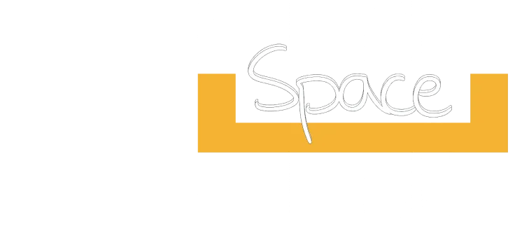
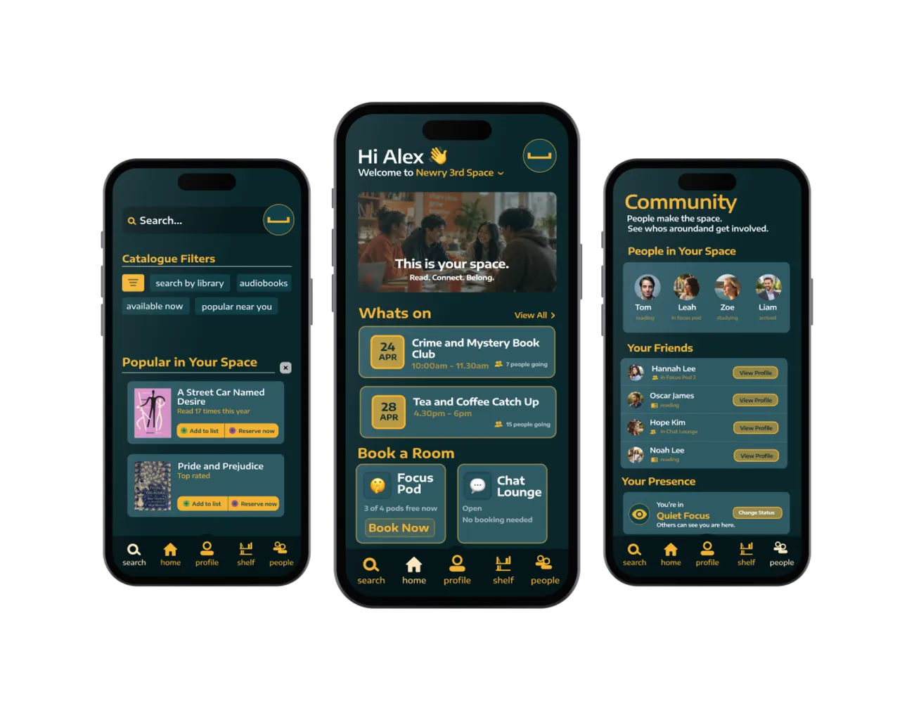
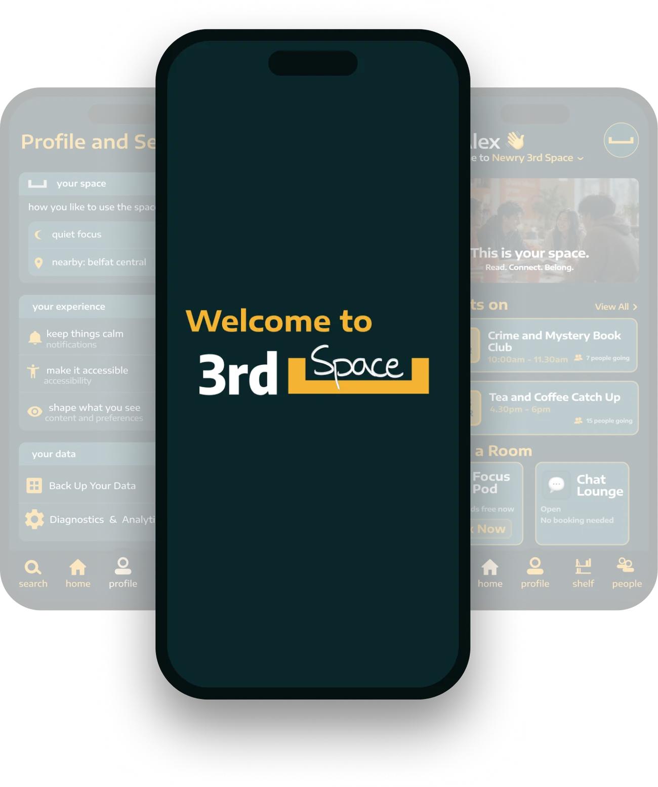
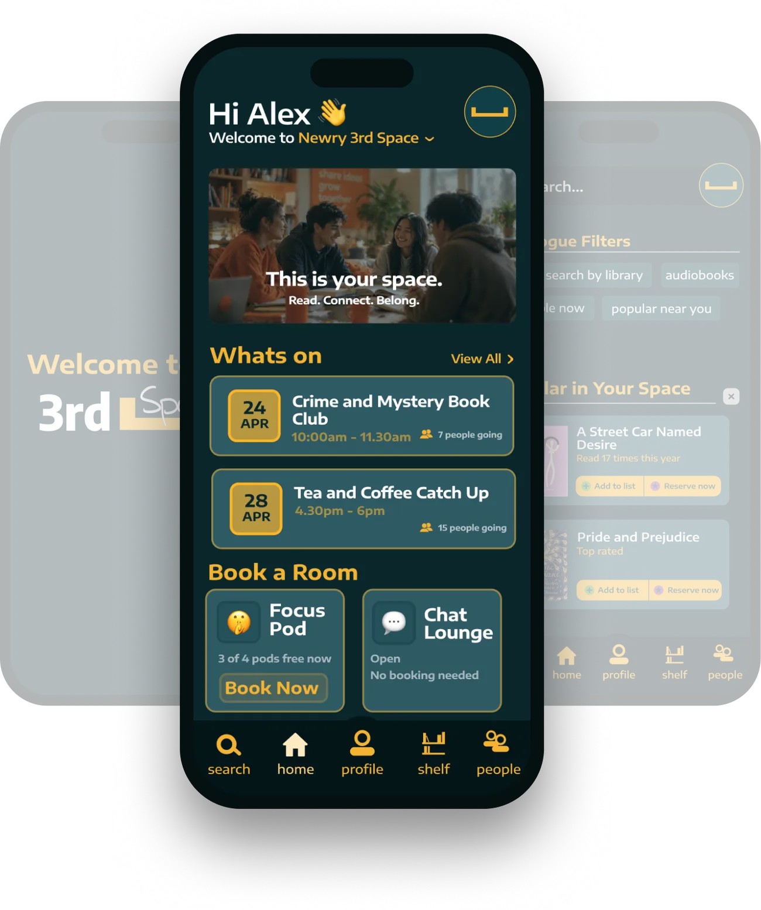
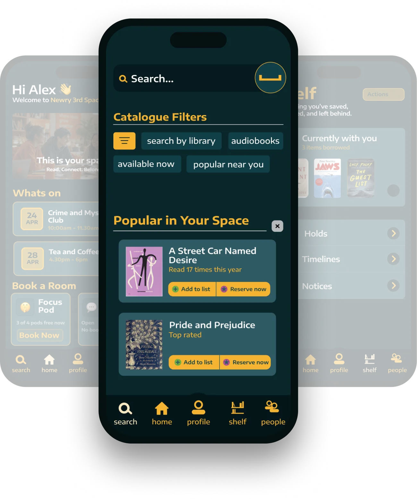
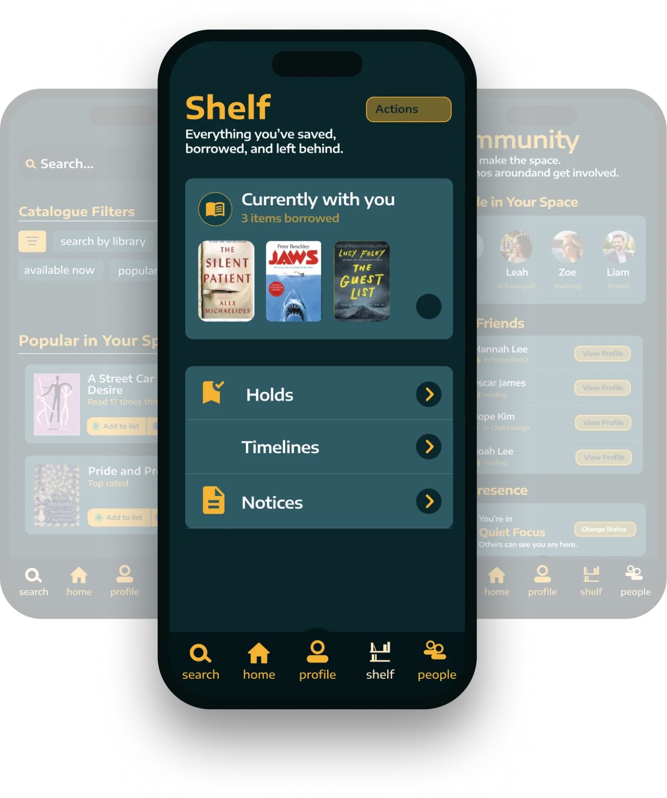
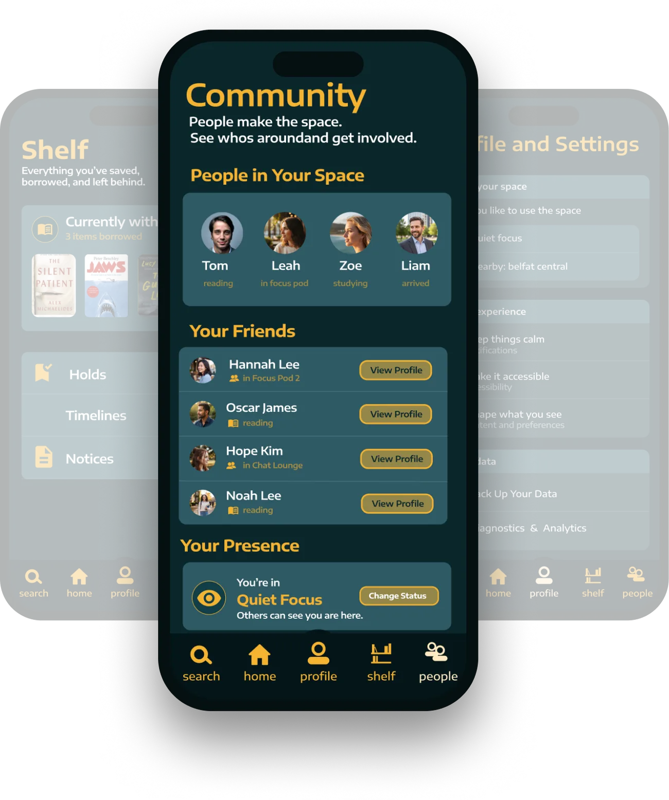
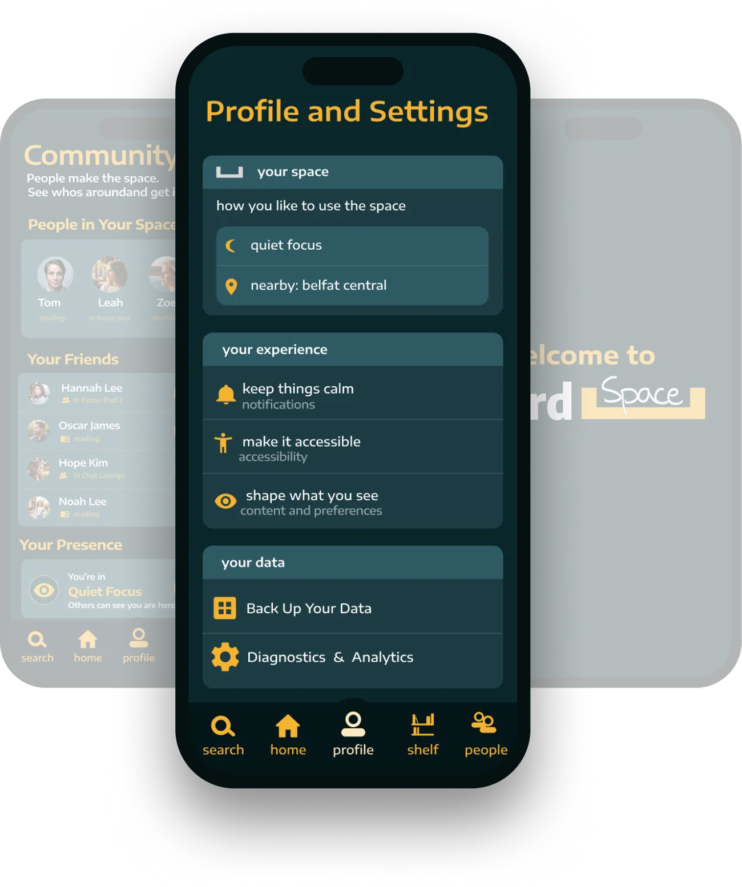

I rebranded Libraries NI around the idea of a third place: somewhere that isn’t home or work, where you can just exist.

I visited Dundonald, Holywood and the Ulster University library and photographed everything. Capital letters on every sign. “FORM 8 AND ABOVE.” Metal shelves straight out of primary school. Treating people like children is what keeps libraries feeling like an extension of school.
of 16- to 24-year-olds used a library in a year.
The Reading Agency, 2019/20How can we make the library somewhere people choose to go, instead of somewhere they’re told to be quiet?
Prefer to hear it from me? This covers my research, process and final designs in my own words.






Most landing pages open with features. I designed with the intent that users could interpret Third Space in many different ways, using my branding knowledge to lead with emotion.
↕ scroll inside it
I go and experience things for myself before I open Figma. For Third Space that meant visiting libraries, competitors and talking to members of the public.
Back to research, not more versions of the same idea. Whenever I hit a wall, reading about third places gave me the answers I was looking for.
I write every point down and try a few versions. I’ll ask probably too many questions, but it means I understand why something isn’t working, not just that it isn’t.
I start from what already works. My app is built on Libby’s structure, so I could focus more on branding and personalisation.
Want the full process? Every sketch, note and wrong turn is in my Notion journal.
View Notion ↗